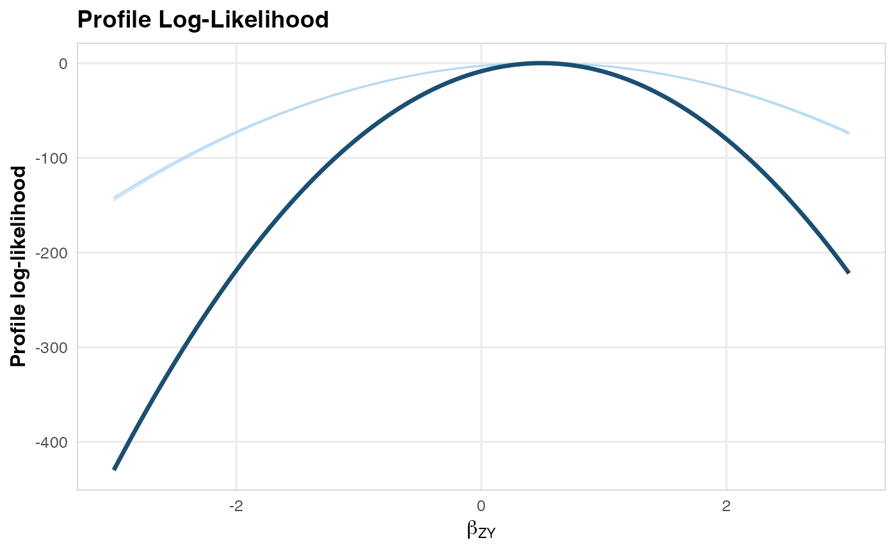

Likelihood profile visualization
plotLikelihoodProfile.RdCreates a ggplot2 visualization of the profile log-likelihood curve(s), showing individual site profiles (if provided) and the combined profile with MLE and confidence interval.
Usage
plotLikelihoodProfile(
combinedProfile,
siteProfileList = NULL,
mrEstimate = NULL,
title = "Profile Log-Likelihood"
)Arguments
- combinedProfile
Output of
poolLikelihoodProfiles.- siteProfileList
Optional named list of site profile objects.
- mrEstimate
Optional output of
computeMREstimatefor annotating the MLE and CI.- title
Plot title. Default is "Profile Log-Likelihood".
Examples
profiles <- simulateSiteProfiles(nSites = 3, trueBeta = 0.5)
combined <- poolLikelihoodProfiles(profiles)
#> Pooling profile likelihoods from 3 site(s)...
#> Pooling complete: 3 sites, 402 total cases, 5598 total controls.
plotLikelihoodProfile(combined, profiles)
